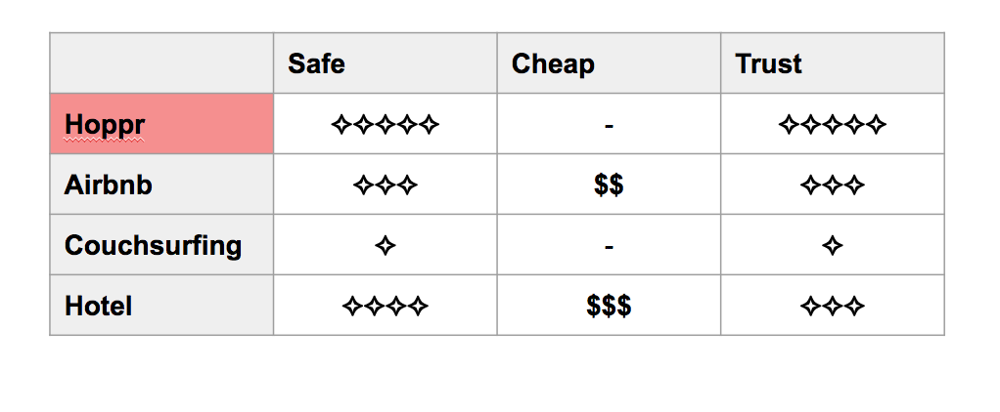
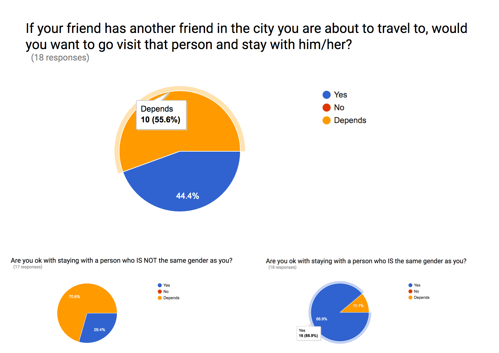
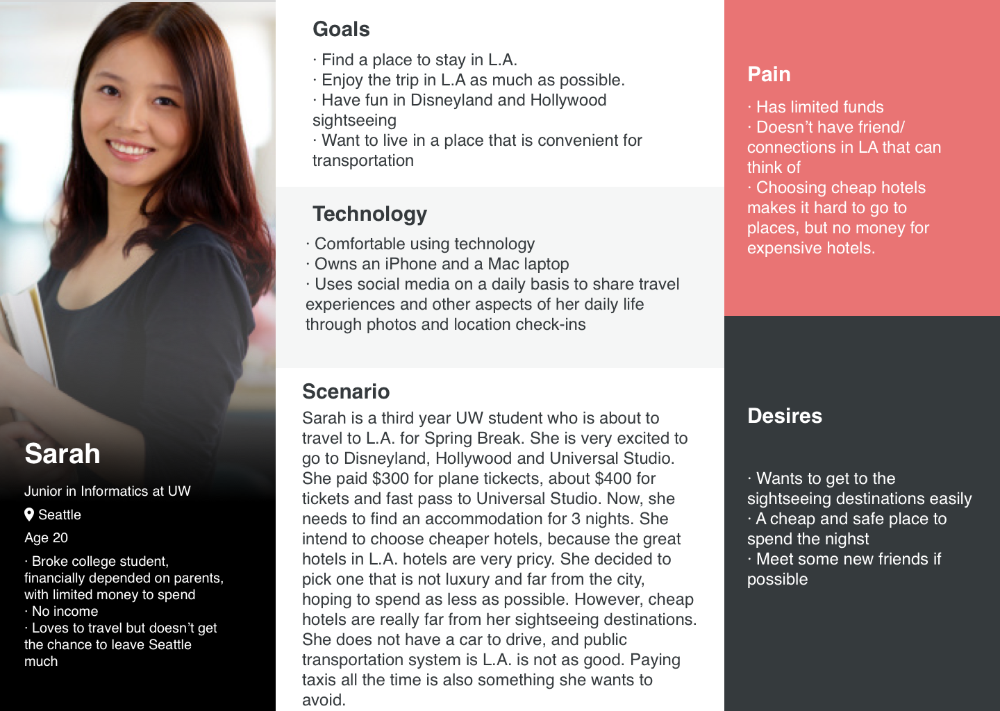
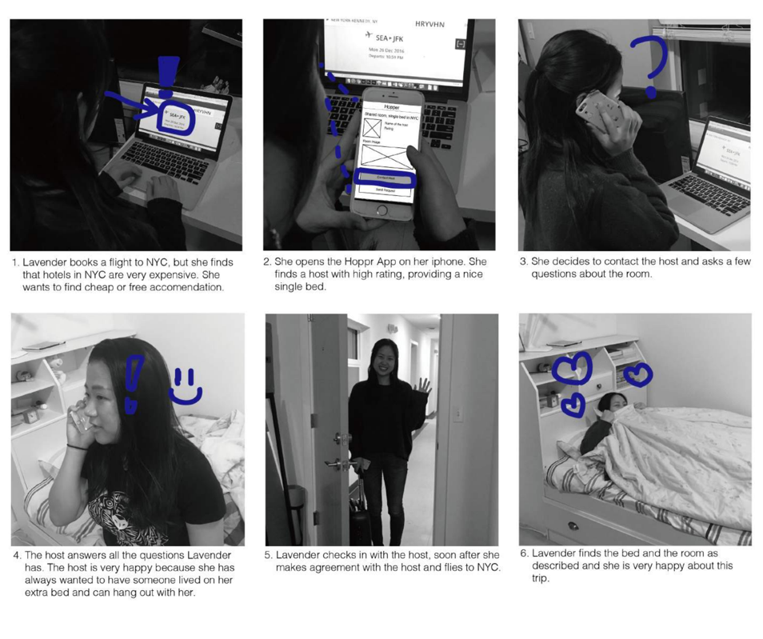
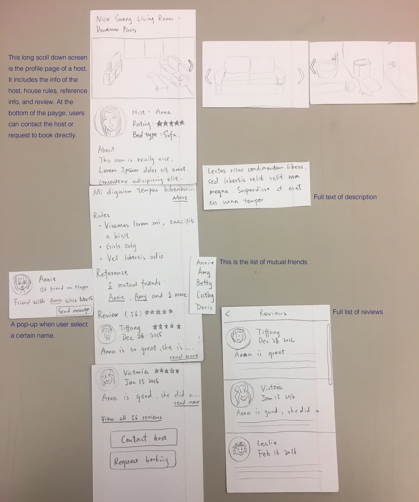
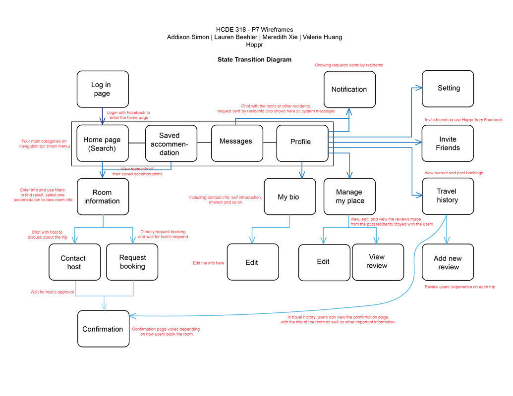
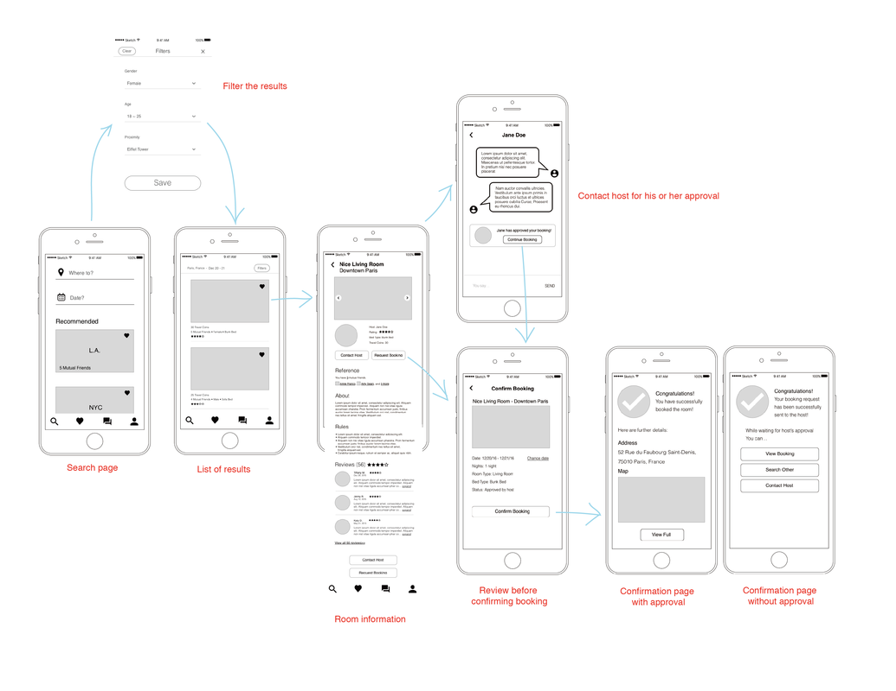
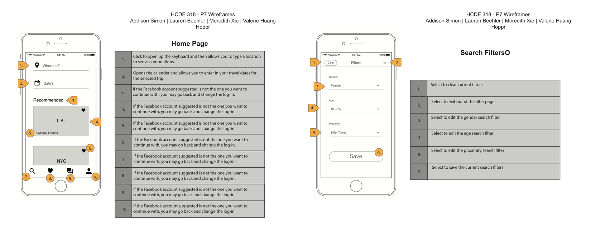
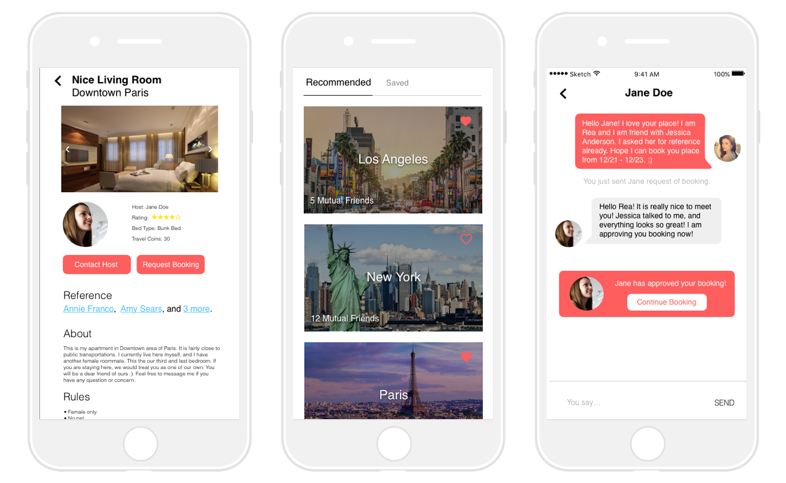
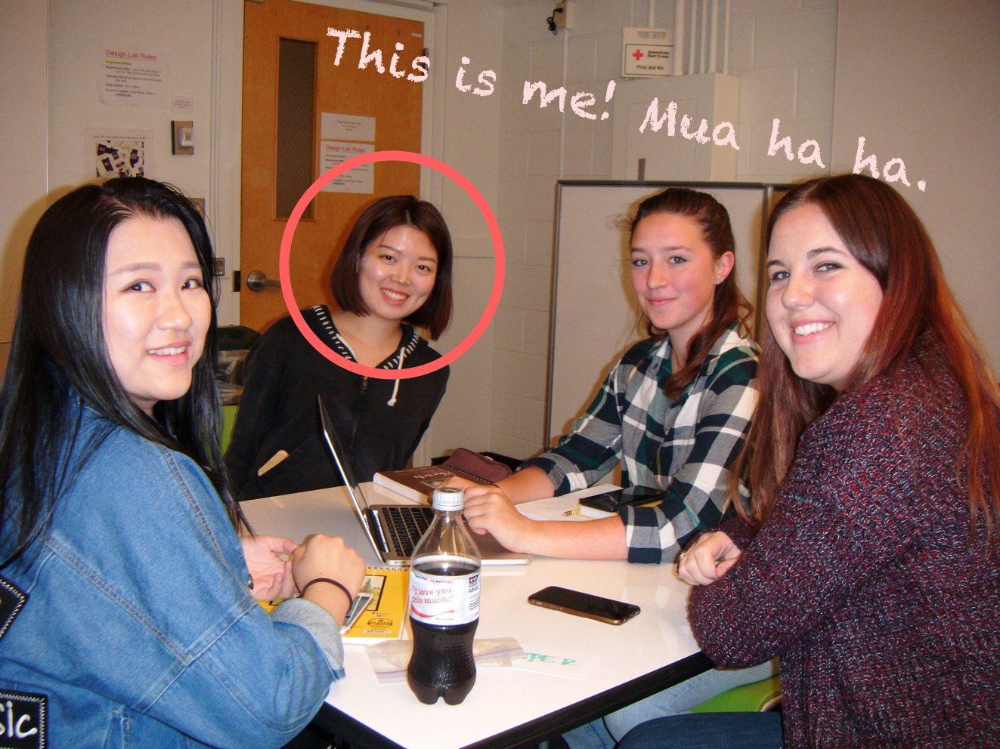

This project is a class project for intro to user centered design.
Prompt: Young adults travel to places often on limited budget. They seek ways to cut the spending on accommodations, saving money to spend on food, sightseeing and such. However, safe and convenient accommodations, like some Airbnb and hotels, are not affordable, and cheap accommodations, such as CouchSurfing, are not safe. If staying with friends for free, people don’t always have friends in the cities they want to go to. Design goal here is to solve this problem by using technology.
Target Users, which is college student, is decided by the prompt.
In ideation studios, we ideated on many solutions and explored them all, and decided to go with mutual friends network through Facebook: users login into Hoppr using Facebook, and Hoppr finds user’s friends and the friends of the user’s friends. Users find friend (or friend’s friend) in town, stay with the friend and pay virtual currency: travel coins. Based on a statistic supplied by Facebook, the median number of friends that a user has on Facebook is 200, so if every of your 200 Facebook friends has 200 friends, that could be as many as 40,000 people and just as many connections.
Research process
Based on the current situation, we decided to started by conducting competitive analysis. We identify the gap among current market choices, and we need to design Hoppr to fulfil this gap.
Also, even though we do understand the users, I still created the survey online and sent out on social media to gather more information about users. In the end, I received 18 responses from target users. Result is down below.
As we can see, the survey result shows the design solution is considered viable by my target users. So I followed up to people who answered “depends” and interviewed them for further clarified answer. After interviewing 6 target users, we figured out that users have numerous preferences, such as gender of the host, proximity to public transportation, etc. In the end, we decided to incorporate users' preferences we found during interviews into our filter feature.
Persona
After conducting the user research, I analyzed the responses we collected and grouped what the participants had in common, such as pain points and similar preferences, and some of the important differences between the individuals. I used the results of the research and interviewees’ personal experiences to create the personas. The point of making this persona is for communication.
Scenarios & Storyboards
The scenarios are a look behind our design; they grow from the personas and the research and influence the rest of the project. I developed scenarios that fit different types of users to help us think more thoroughly about the features we wanted to include.
Sitemap
We built the sitemap from scratch, and we went through several design iterations to finalize it. This sitemap went through several iterations based on multiples rounds of evaluation of paper prototypes, low fidelity prototypes, instructor's comments, and a lot of peer reviews. See below for our final sitemap.

Paper prototype & testing
After I had collected sufficient data from our user research methods and planned out our information architecture, the next step in our process was to transform that data into visible, tangible screens and results. This began with literally very sketchy ideas about what the UI should look like and how our users would be able to interact with Hoppr.
Example findings: certain functions are missing when users try to adjust their actions. Categorization in context caused confusion. Placement of some elements problematize the Information Architecture.
Transition diagram & Annotated wireframe
Before starting working on the annotated wireframes, I analyzed the results collected from the previous usability evaluation of the effectiveness of the paper prototype. I adjusted the the information architecture and the interface based on the findings and some other suggestions from the participants, when creating wireframes based on our paper prototype. The file attached is the wireframe of the full system with annotation on each element. The annotations are to present our design rationales or purpose of the decisions.
After creating the wireframe of the full system, I used the wireframes to rebuild the information architecture in a form of state transition diagram. This diagram mainly illustrated the key path scenario of the system. The hierarchy was indicated by the depth of the color of arrows. It helped to organize and better demonstrate the structure of the wireframes.
 High fidelity prototype
From the wireframes, creating the high-fidelity mock-up wasn’t simply a matter of adding images and color; the structure of several of the screens was adjusted to account for critiques from our peers and another pass over with the personas.
As reaching the end of the quarter, I still have elements of our project that I don’t have answers to. I had originally conceived of Hoppr utilizing a virtual currency to incentivize hosting, because the virtual currency system balance the number of users for being host and residents. However, as the project moving forward, I found that this would limit users who don’t have that option to host (such as people who live in Frat or Sorority house). Additionally, risk management is an important element, but because we don’t use real money on Hoppr, the most we currently would be able to provide is advice and resources to deal with situations. Solving these issues would require more research and testing.